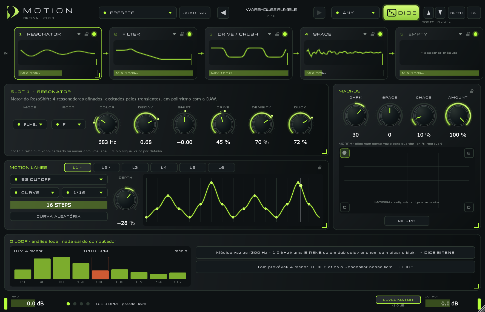
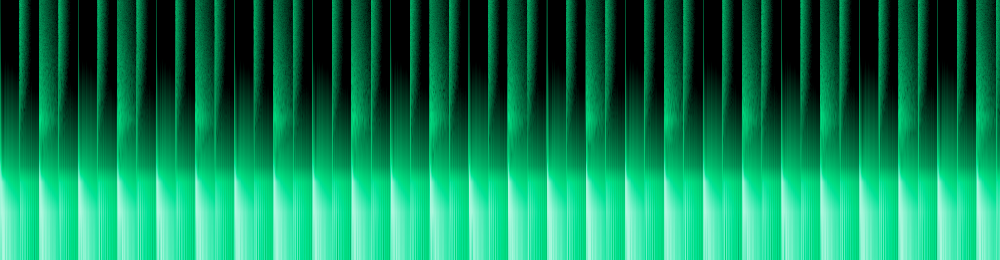
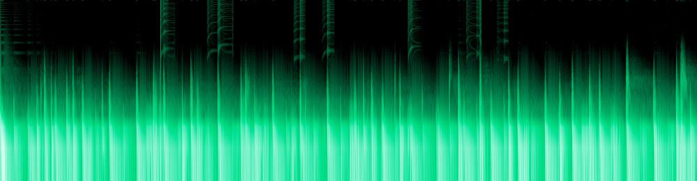

DICE curado
Sorteia módulos, valores e movimento dentro de receitas do nicho: RUMBLE, FERRO, SIRENE, DUB, INDUSTRIAL (ou ANY). Nunca é random cego: cada range foi escolhido de ouvido e o sub e o kick ficam protegidos. Atalho: D.
DRELVA · VST3 · v1.0
Motion é uma rack de efeitos para techno hipnótico, raw e industrial. Cinco slots, sete módulos, seis motion lanes sincronizadas com a DAW. Chegas a um som bom em segundos: DICE até gostar, volta atrás, cruza dois sons, ou descreve o som em texto.
Soa bem sem IA. A IA só acelera a descoberta.

O motor do Motion a correr no teu browser, sobre um loop de techno (ou o teu ficheiro). Carrega em LIGAR SOM, depois DICE.
cadeado em cada knob: o DICE não lhe mexe · duplo clique: valor por defeito · → lane: move-o com uma lane
clica num canto vazio para guardar, arrasta para misturar
O ficheiro fica no teu browser. Nada é enviado.
A demo é uma versão web do motor (sem oversampling, sem análise do loop e sem IA). O plugin corre a versão completa, testada com 2385 verificações.
O mesmo loop seco (kick, hat, clap, baixo em F a 128 BPM) através dos presets de fábrica e de cinco rolls do DICE, renderizados pelo plugin real. O level match mantém tudo ao volume do seco (±0,5 dB), por isso comparas som e não volume.


Windows 10/11, 64-bit. VST3 para Ableton Live, Bitwig, Reaper, FL Studio, Cubase e outros; mais uma versão Standalone para experimentar sem DAW.
macOS (VST3 + AU): compila a partir do código (Xcode). O código de sistema do Keychain já está escrito mas ainda não foi testado num Mac.
Motion-1.0-Windows.zip e extrai.Motion.vst3 para C:\Program Files\Common Files\VST3\ (pede permissão de administrador).O instalador ainda não está assinado: o Windows SmartScreen pode avisar ("Mais informações ▸ Executar mesmo assim"). A assinatura de código vem com a versão comercial.
Três camadas: um núcleo que funciona offline, inteligência local sem LLM, e IA opcional por cima.
Sorteia módulos, valores e movimento dentro de receitas do nicho: RUMBLE, FERRO, SIRENE, DUB, INDUSTRIAL (ou ANY). Nunca é random cego: cada range foi escolhido de ouvido e o sub e o kick ficam protegidos. Atalho: D.
Cada DICE, preset ou pedido à IA fica no histórico. Volta atrás e em frente com as setas (← →). As edições que fizeres a um som ficam guardadas quando sais dele.
Fixa um slot inteiro, um só parâmetro (botão direito no knob), uma lane ou as macros. O DICE, o BREED e a IA sorteiam só o resto.
▲ / ▼ treinam um pequeno modelo local (regressão logística sobre a receita) que puxa o DICE para o que gostas, sem deixar de explorar. Fica no teu computador.
Seis sequenciadores de curvas sincronizados com a DAW: CURVE, STEP, LFOs e ENVELOPE. Desenha a curva com o rato, escolhe o destino (qualquer knob, o MIX de um slot ou o AMOUNT), a divisão e a profundidade. O ponto lime no knob mostra onde a lane o está a levar.
DARK escurece tudo o que é brilho e empurra o drive. SPACE abre reverbs, delays e larguras. CHAOS dá deriva aleatória aos parâmetros de caos e aprofunda as lanes. AMOUNT é o dry/wet global.
Guarda quatro sons nos cantos A–D e arrasta no pad para passar entre eles. Os parâmetros do mesmo módulo misturam-se; os módulos trocam a meio, com crossfade. Ao desligar, o som fica onde o pad estava.
Cruza o som atual com o anterior (ou com um snapshot) e dá quatro filhos: módulos de um ou de outro pai, valores misturados, uma pequena mutação.
Com o plugin aberto, o Motion ouve o teu loop: tom, BPM, densidade de transientes e buracos no espectro. As sugestões são botões: "o teu loop está vazio entre 60 e 150 Hz, queres um rumble?" ▸ DICE RUMBLE, já no tom certo.
| Módulo | O que faz | Parâmetros |
|---|
Escreve "rumble de armazém escuro que respira com o kick" e o Motion monta a cadeia, os valores e o movimento. Continua a conversa: "mais sujo", "menos metálico", "abre no compasso 4". A resposta é uma receita validada e limitada a ranges seguros antes de chegar ao áudio, com transições suaves. O som nunca pára enquanto a IA pensa.
Não há servidor da Drelva: usas a tua chave ou um modelo local. Só saem o texto e os números da análise, nunca o áudio. A chave fica no cofre do sistema (Windows Credential Manager / macOS Keychain), nunca no projeto da DAW.
| Opção | Para quem | Nota |
|---|---|---|
| Desligado | todos | DICE, histórico, breeding e análise funcionam na mesma |
| Ollama (local) | offline e privado | modelos de 3–8B; ~5 GB de RAM num 7–8B. ollama pull qwen2.5:7b |
| Gemini | para começar | chave grátis no Google AI Studio; no plano grátis os dados podem ser usados pela Google |
| Claude | mais qualidade | Haiku 4.5 (o mais barato), Sonnet 5.5, Opus 5.5 |
| OpenAI | quem já tem conta | a subscrição ChatGPT não inclui a API |
Documentos\Drelva\Motion\Presets.ollama pull …). O primeiro pedido carrega o modelo e pode demorar.